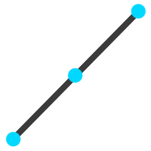
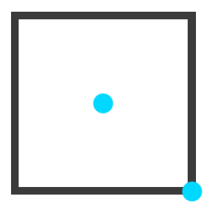

The line tool has 3 anchor points.
One in the center of the line and two on each side of the line. The anchor points on the side are used to resize the line and the one in the center is to move the line around.
These anchor points can be made visible in the Settings tab.
The circle tool has 2 anchor points.
One in the center to move the circle around and one on the bottom right corner to resize the circle.
The rectangle tool has 2 anchor points.
One in the center to move the rectangle around and one on the bottom right corner to resize the rectangle.
The arrow tool has 3 anchor points.
One in the center of the arrow and two on each side of the arrow. The anchor points on the side are used to resize the arrow and the one in the center is to move the line around.
The arrow tool has 3 anchor points.
One in the center and two on each side end of the lines. The anchor points on the ends are used to adjust the angle and the one in the center is to move the shape around.